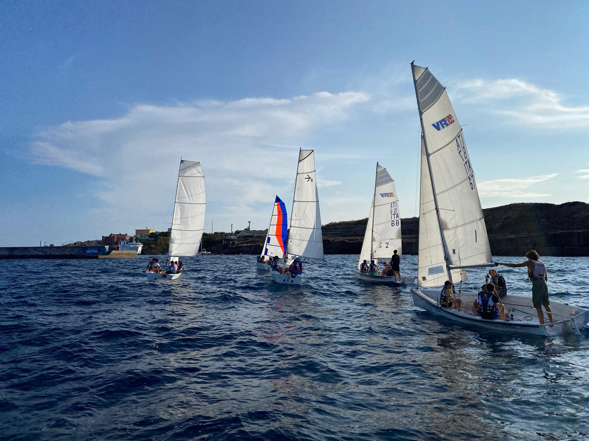
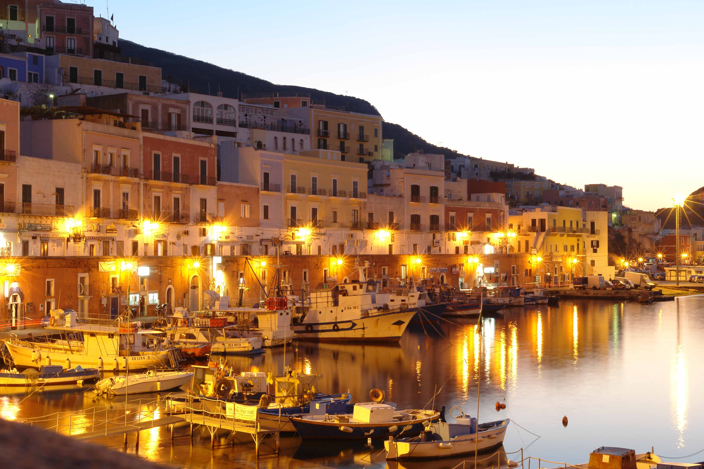

L'EQUIPAGGIO
La vita di bordo e le nuove amicizie

Sulla stessa barca
Un campo velico non è fatto solo di vento e nodi, ma soprattutto di persone. Questa esperienza mi ha permesso di conoscere ragazzi di età e provenienze molto diverse. Proprio queste differenze si sono rivelate la nostra forza: in mare le barriere spariscono e ci si ritrova, letteralmente, "sulla stessa barca".

Istruttori, allievi e convivialità
Gli istruttori hanno mantenuto un approccio severo e attento alla sicurezza, ma al tempo stesso estremamente amichevole. Il fatto che molti di loro fossero miei coetanei ha accorciato le distanze.
La condivisione non finiva sul pontile. Il tempo libero, i pasti e le serate passate a chiacchierare sono stati il vero collante. Questi momenti di convivialità hanno trasformato una classe di vela in un vero equipaggio affiatato.